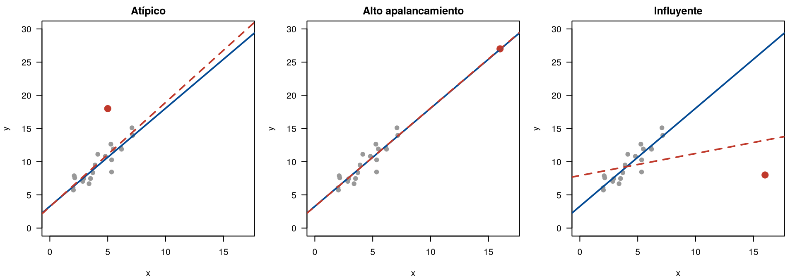
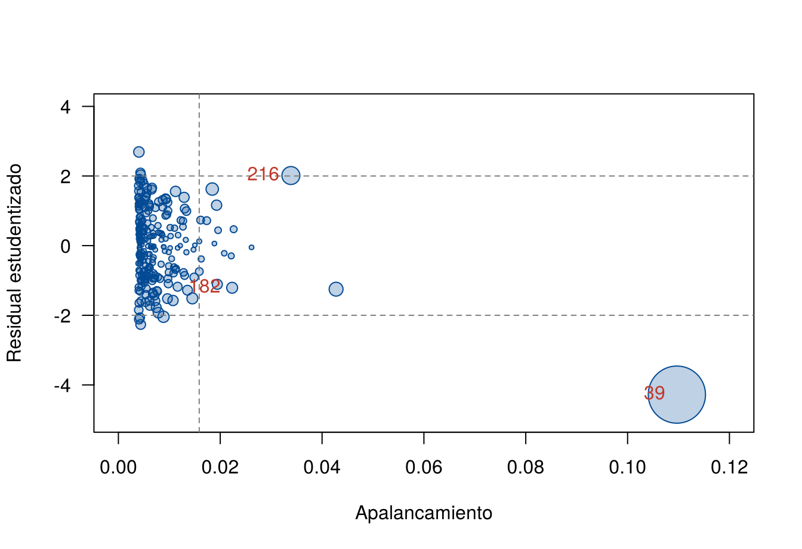

En la página Revisión de los supuestos, un solo hombre de 252 hizo que tres pruebas encontraran problemas. Los datos reales casi siempre tienen algunas observaciones que no siguen el patrón de las demás. Algunas son errores; otras son casos reales poco comunes. Algunas cambian mucho la recta; otras casi nada.
Esta página enseña a distinguir tres tipos de puntos inusuales, a medir cuánto influye cada observación y a decidir qué hacer con ella. Los bloques de código se ejecutan en orden.
Los datos se descargan aquí:
grasa.csv. Guarde el archivo en la
carpeta data de su proyecto de
RStudio.
grasa <- read.csv("data/grasa.csv")
modelo <- lm(grasa ~ abdomen, data = grasa)
n <- nrow(grasa)
p <- 2 # número de coeficientes: intercepto y pendienteUn punto puede ser inusual en \(y\) (lejos de la recta), en \(x\) (lejos de los demás valores de \(x\)) o en los dos:
| Tipo | Inusual en \(y\) | Inusual en \(x\) | Efecto en la recta | Efecto en \(\hat{\sigma}\) |
|---|---|---|---|---|
| Atípico | Sí | No | Poco | Lo aumenta |
| De alto apalancamiento | No: sigue la recta | Sí | Poco; hace parecer más precisa la pendiente | Poco |
| Influyente | Sí | Sí | Mucho: la recta gira hacia él | Lo aumenta |
La figura muestra los tres casos con datos simulados. La recta azul es la de los 20 puntos grises; la roja incluye el punto rojo.
set.seed(2026)
x0 <- runif(20, 2, 8)
y0 <- 3 + 1.5 * x0 + rnorm(20, 0, 1)
extras <- list(Atípico = c(5, 18), "Alto apalancamiento" = c(16, 3 + 1.5 * 16),
Influyente = c(16, 8))
par(mfrow = c(1, 3), mar = c(4, 4, 2, 1))
for (nombre in names(extras)) {
xe <- c(x0, extras[[nombre]][1]); ye <- c(y0, extras[[nombre]][2])
plot(x0, y0, pch = 19, col = "gray60", las = 1, xlim = c(0, 17), ylim = c(0, 30),
xlab = "x", ylab = "y", main = nombre)
points(extras[[nombre]][1], extras[[nombre]][2], pch = 19, col = "#C0392B", cex = 1.6)
abline(lm(y0 ~ x0), col = "#034A94", lwd = 2)
abline(lm(ye ~ xe), col = "#C0392B", lwd = 2, lty = 2)
}
Tres tipos de puntos inusuales. Recta azul: sin el punto rojo; recta roja: con él.
El apalancamiento (leverage) de la observación \(i\) mide qué tan lejos está su \(x\) del centro de los datos:
\[ h_{ii} = \frac{1}{n} + \frac{(x_i - \bar{x})^2}{S_{xx}} \]
Va de \(1/n\) (cuando \(x_i = \bar{x}\)) a 1, y su promedio es \(p/n\), donde \(p\) es el número de coeficientes. Un punto con apalancamiento alto es como una persona sentada lejos del centro de un balancín: con poco peso puede inclinar la recta. Un criterio usual marca los puntos con \(h_{ii} > 2p/n\).
h <- hatvalues(modelo)
2 * p / n # umbral[1] 0.01587302sort(h, decreasing = TRUE)[1:5] # los cinco mayores 39 41 216 242 169
0.10967822 0.04275268 0.03387581 0.02615090 0.02264036 La observación 39 tiene un apalancamiento de 0.11: casi 14 veces el promedio (\(p/n = 0.0079\)). Su abdomen de 148 cm está muy lejos de la media de 92.6 cm.
Un punto es atípico si su residual es muy grande.
Para comparar se usa el residual estudentizado
(rstudent()), que se calcula con \(\hat{\sigma}_{(i)}\), la estimación de
\(\sigma\) sin la observación \(i\). Así el propio punto no infla la escala
con la que se mide. Si el modelo es correcto, sigue una distribución
\(t\) con \(n
- p - 1\) grados de libertad.
rs <- rstudent(modelo)
sort(abs(rs), decreasing = TRUE)[1:5] 39 207 204 12 81
4.278666 2.691053 2.264474 2.116576 2.092785 Con 252 observaciones, es normal que unas cuantas pasen de ±2 por azar: se espera que lo haga cerca del 5 %, unas 13. Para decidir si el más extremo es atípico, se usa la corrección de Bonferroni: se multiplica su valor p por \(n\), porque se está buscando el mayor entre \(n\) residuales.
valor_p <- 2 * pt(-abs(rs[39]), df = n - p - 1)
c(valor_p = valor_p, bonferroni = min(1, n * valor_p)) valor_p.39 bonferroni
0.00002683167 0.00676158042 Aun con la corrección, el valor p de la observación 39 es 0.0068: es
un atípico. La función outlierTest() del paquete
car hace este mismo cálculo.
Un punto es influyente si quitarlo cambia de forma importante el modelo. Las medidas comparan el ajuste con y sin cada observación:
| Medida | Qué mide | En R | Umbral orientativo |
|---|---|---|---|
| Distancia de Cook, \(D_i\) | Cuánto cambian todos los coeficientes juntos | cooks.distance() |
\(4/n\); mayor que 1 es muy influyente |
| DFBETAS | Cuánto cambia cada coeficiente, en errores estándar | dfbetas() |
\(2/\sqrt{n}\) en valor absoluto |
| DFFITS | Cuánto cambia el valor ajustado del propio punto | dffits() |
\(2\sqrt{p/n}\) en valor absoluto |
| COVRATIO | Cuánto cambia la precisión de los coeficientes | covratio() |
Fuera de \(1 \pm 3p/n\) |
La distancia de Cook combina las dos ideas anteriores:
\[ D_i = \frac{r_i^2}{p} \cdot \frac{h_{ii}}{1 - h_{ii}} \]
donde \(r_i\) es el residual estandarizado. Es grande si el punto está lejos de la recta y tiene apalancamiento alto.
Los umbrales son orientativos: cada libro propone uno distinto y ninguno es una prueba de hipótesis. Lo útil es ver qué observaciones se separan claramente de las demás.
medidas <- data.frame(id = grasa$id, abdomen = grasa$abdomen, grasa = grasa$grasa,
h = h, rstudent = rs, cook = cooks.distance(modelo),
dfbetas_pend = dfbetas(modelo)[, 2])
medidas <- medidas[order(medidas$cook, decreasing = TRUE), ]
round(head(medidas, 5), 3) id abdomen grasa h rstudent cook dfbetas_pend
39 39 148.1 33.8 0.110 -4.279 1.055 -1.474
216 216 122.1 45.1 0.034 2.014 0.070 0.354
41 41 126.2 33.1 0.043 -1.250 0.035 -0.252
36 36 113.1 38.2 0.018 1.625 0.025 0.197
180 180 104.5 16.8 0.009 -2.043 0.018 -0.143c(cook = 4 / n, dfbetas = 2 / sqrt(n)) cook dfbetas
0.01587302 0.12598816 La observación 39 tiene una distancia de Cook de 1.05, mayor que 1 y 15 veces la segunda más grande. Su DFBETAS para la pendiente, -1.47, dice que quitarla cambia la pendiente en casi una vez y media su error estándar. Con el umbral \(4/n\), 7 observaciones superan el criterio, pero solo la 39 se separa del resto.
influence.measures() calcula todas las medidas a la vez
y marca con un asterisco las que superan sus criterios (que no son
exactamente los de la tabla):
summary(influence.measures(modelo))Potentially influential observations of
lm(formula = grasa ~ abdomen, data = grasa) :
dfb.1_ dfb.abdm dffit cov.r cook.d hat
35 0.04 -0.04 -0.04 1.03_* 0.00 0.02
39 1.43_* -1.47_* -1.50_* 0.98 1.05_* 0.11_*
41 0.24 -0.25 -0.26 1.04_* 0.03 0.04_*
43 -0.01 0.01 0.02 1.02_* 0.00 0.02
50 -0.03 0.03 -0.03 1.03_* 0.00 0.02
169 -0.06 0.07 0.07 1.03_* 0.00 0.02
204 -0.06 0.05 -0.15 0.97_* 0.01 0.00
205 -0.05 0.06 0.06 1.03_* 0.00 0.02
207 0.00 0.02 0.17 0.96_* 0.01 0.00
216 -0.34 0.35 0.38_* 1.01 0.07 0.03_*
242 0.01 -0.01 -0.01 1.04_* 0.00 0.03_*
244 -0.01 0.01 0.01 1.03_* 0.00 0.02 El gráfico de apalancamiento contra residual estudentizado, con el tamaño de cada punto proporcional a la distancia de Cook, reúne las tres ideas:
plot(h, rs, cex = 0.5 + 6 * sqrt(cooks.distance(modelo)), pch = 21,
bg = "#034A9440", col = "#034A94", las = 1, xlim = c(0, 0.12), ylim = c(-5, 4),
xlab = "Apalancamiento", ylab = "Residual estudentizado")
abline(h = c(-2, 2), lty = 2, col = "gray50")
abline(v = 2 * p / n, lty = 2, col = "gray50")
destacar <- c(39, 182, 216)
text(h[destacar], rs[destacar], labels = destacar, pos = 2, col = "#C0392B")
Apalancamiento y residual estudentizado de cada hombre. El área de cada círculo es proporcional a su distancia de Cook.
| Zona del gráfico | Tipo de punto |
|---|---|
| Izquierda, entre −2 y 2 | Usual |
| Izquierda, fuera de ±2 | Atípico, poco influyente |
| Derecha, entre −2 y 2 | Alto apalancamiento, poco influyente |
| Derecha, fuera de ±2 | Influyente |
Detectar un punto no es razón para borrarlo. Primero hay que averiguar por qué es inusual:
| Qué es | Qué hacer |
|---|---|
| Un error de digitación o de medición que se puede corregir | Corregirlo |
| Un error que no se puede corregir (un valor imposible) | Eliminarlo e informarlo |
| Un caso de otra población (por ejemplo, una mujer en un estudio de hombres) | Excluirlo, explicar por qué y limitar las conclusiones a la población estudiada |
| Un caso real y válido | Conservarlo. Reportar el ajuste con y sin él, y pensar si falta una variable que lo explique |
En los datos de grasa hay dos casos para decidir:
ajuste <- function(datos) {
m <- lm(grasa ~ abdomen, data = datos)
c(intercepto = coef(m)[[1]], pendiente = coef(m)[[2]], sigma = sigma(m),
r2 = summary(m)$r.squared)
}
round(rbind(todas = ajuste(grasa),
sin_182 = ajuste(grasa[grasa$id != 182, ]),
sin_39 = ajuste(grasa[grasa$id != 39, ]),
sin_39_ni_182 = ajuste(grasa[!grasa$id %in% c(39, 182), ])), 3) intercepto pendiente sigma r2
todas -35.197 0.585 4.514 0.662
sin_182 -34.769 0.581 4.510 0.656
sin_39 -38.605 0.623 4.366 0.681
sin_39_ni_182 -38.204 0.618 4.365 0.674Quitar la 182 casi no cambia nada. Quitar la 39 sube la pendiente de 0.585 a 0.623. Una decisión razonable para estos datos:
Que \(\hat{\sigma}\) y \(R^2\) mejoren al quitar un punto no justifica quitarlo: por construcción, quitar el punto peor ajustado siempre mejora esas cifras.
En el gráfico interactivo hay 20 hombres de la muestra (puntos grises) y un hombre más (punto rojo) que usted puede mover con los dos deslizadores. La recta azul se ajusta sin el punto rojo; la recta roja, con él. Compruebe que:
| Problema | Causa | Solución |
|---|---|---|
| Borrar los puntos que superan un umbral | Se toma el umbral como una prueba | Averiguar por qué el punto es inusual antes de decidir |
| Quitar un punto porque mejora \(R^2\) o \(\hat{\sigma}\) | Quitar el peor ajustado siempre mejora esas cifras | Decidir por el origen del dato, no por el ajuste |
| Llamar influyente a todo punto de alto apalancamiento | El apalancamiento es influencia potencial | Influyente es el que cambia la recta; mirar Cook y DFBETAS |
| Llamar atípico a un punto lejano en \(x\) que sigue la recta | Atípico se refiere al residual | Es un punto de alto apalancamiento |
| Mezclar varios umbrales de Cook en el mismo análisis | Cada libro propone uno | Elegir un criterio, decirlo y mirar qué puntos se separan |
| Eliminar puntos sin reportarlo | Se pierde transparencia | Reportar siempre el ajuste con y sin ellos |
Calcule el apalancamiento y la distancia de Cook de la observación 39
con las fórmulas de la página y compárelos con hatvalues()
y cooks.distance().
x <- grasa$abdomen
h39 <- 1 / n + (x[39] - mean(x))^2 / sum((x - mean(x))^2)
r39 <- rstandard(modelo)[39]
c(h = h39, cook = r39^2 / p * h39 / (1 - h39)) h cook.39
0.1096782 1.0546050 c(h = hatvalues(modelo)[39], cook = cooks.distance(modelo)[39]) h.39 cook.39
0.1096782 1.0546050 Coinciden.
Calcule la distancia de Cook en el modelo de la grasa según el pecho. ¿Cuáles son las tres observaciones más influyentes? ¿Cuánto cambia la pendiente sin la más influyente?
modelo_pecho <- lm(grasa ~ pecho, data = grasa)
sort(cooks.distance(modelo_pecho), decreasing = TRUE)[1:3] 39 216 36
0.09064279 0.08027796 0.02258854 c(con = coef(modelo_pecho)[2],
sin = coef(lm(grasa ~ pecho, data = grasa[grasa$id != 39, ]))[2])con.pecho sin.pecho
0.6462223 0.6633546 La observación 39 vuelve a ser la más influyente, pero ahora casi empata con la 216 y su distancia de Cook es mucho menor que en el modelo del abdomen. Aunque tiene el pecho más grande de la muestra, su grasa queda más cerca de lo que predice este modelo. Un punto puede ser muy influyente en un modelo y poco en otro.
Suponga que al digitar el abdomen del hombre 100 se escribió 190.0 en lugar de su valor real. Cambie ese dato en una copia de la base, ajuste el modelo y calcule su distancia de Cook. ¿Lo detectaría?
copia <- grasa
copia$abdomen[copia$id == 100] <- 190
m_copia <- lm(grasa ~ abdomen, data = copia)
c(abdomen_real = grasa$abdomen[100], grasa = grasa$grasa[100])abdomen_real grasa
94.0 21.7 cooks.distance(m_copia)[100] 100
12.46711 coef(m_copia)[2] abdomen
0.4486121 Sí. Con 190 cm de abdomen y una grasa común, el punto tiene apalancamiento muy alto y queda lejos de la recta: su distancia de Cook es enorme y la pendiente cae mucho. Por eso conviene revisar las medidas de influencia antes de interpretar el modelo.
Última revisión: 9 de noviembre de 2026.